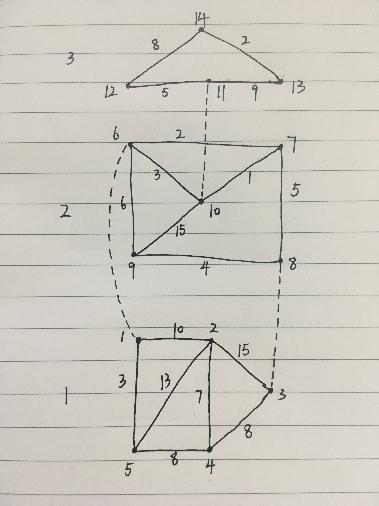
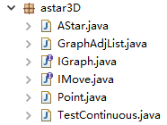

修改了上次的代码，现在支持室内的多楼层情况下的最短路径搜索，还是使用A*算法，把在GraphAdjList中VNode没有利用起来的data字段作为我们存储楼层属性的位置。
实际上是我偷懒了，正常情况下VNode里应该再加一个int level属性，而data还是作为绑定用户想添加任意类型的数据的一个位置来使用，这样例如当用户想对任意节点添加String类型的描述时，声明GraphAdjList<String>即可，但现在我们的GraphAdjList只能声明为GraphAdjList<Integer>，因为我们把data作为楼层属性来使用，名存实亡的模板类hh。
用户添加节点时使用GraphAdjList.insertVex(E v,int index,int x,int y)，v 楼层，index 节点的唯一序列号(从1开始，符合生活习惯)，x,y是点坐标，添加边的操作与上次不变。
需要注意的是，在我们的A*代码中，f=g+h,启发函数h设置的可能不是很理想，我们仍旧沿用了x,y的曼哈顿距离，未考虑楼梯口位置和层数等因素的影响，如果遇到起点终点都在所属层的中心位置，楼梯电梯在每层的边缘，搜索方向会先往中心扩展，直到没有结果时，才会往边缘扩展，随后扩展到楼上或楼下，在这种情况下效率可能不佳，但仍旧能获得最短路径。简而言之，就是在我们现在设计的h下，起点会优先向终点在起点所属层的垂足点扩展。至于h的设计，可以去查阅一下相关文献。
我们依旧使用TestContinuous作为我们的测试类，自己画了一个简单的数据案例 ，想要查询从一楼的节点4到三楼的节点14的最短路径。

其中一二楼之间只有通道1-6，3-8，分别代价是3，4。二三楼之间只有通道10-11，代价是5。
最后获得结果是4-5-1-6-10-11-13-14，花费总代价是33。
话不多说仍旧上代码。

package astar3D;
import java.util.ArrayList;
import java.util.Collections;
import java.util.Comparator;
import java.util.HashMap;
import java.util.HashSet;
import java.util.List;
import java.util.Map;
import java.util.Set;
import astar3D.GraphAdjList.ENode;
import astar3D.GraphAdjList.VNode;
/**
*
* @author yh
* @version 3.0
*
*/
public class AStar implements IMove {
/* 打开的列表 */
Map<String, Point> openMap = new HashMap<String, Point>();
/* 关闭的列表 */
Map<String, Point> closeMap = new HashMap<String, Point>();
/* 障碍物 */
Set<Point> barrier;
/* 起点 */
Point startPoint;
/* 终点 */
Point endPoint;
/* 当前使用节点 */
Point currentPoint;
/* 循环次数，为了防止目标不可到达 */
int num = 0;
//存储的数据结构
public GraphAdjList<Integer> graphadjlist;
/**
* 初始化并开始计算最佳路径
* @param point1 用户输入的起始点
* @param point2 用户输入的终止点
* @param barrier 无顺序的障碍列表
*/
@Override
public Point move(Point point1, Point point2, Set<Point> barrier) {
num = 0;
this.barrier = barrier;
this.startPoint = findNearPoint(point1);
this.endPoint = findNearPoint(point2);
//预留位置，准备解决点在障碍物里的情况
//Point endPoint=new Point(x2,y2);
//this.endPoint = this.getNearPoint(endPoint,endPoint);
this.closeMap.put(startPoint.getKey(), startPoint);
this.currentPoint = this.startPoint;
this.toOpen(startPoint);
return endPoint;
}
/**
* 求两点间的估算代价， 启发函数一（曼哈顿距离）： (Math.abs(x1 - x2) + Math.abs(y1 - y2))
* 启发函数二（平方的欧几里得距离）：((x2 - x1) * (x2 - x1) + (y2 - y1) * (y2 -y1))
* 启发函数三（欧几里得距离）：(int) Math.sqrt((x2 - x1) * (x2 - x1) + (y2 - y1) *(y2 -y1))
* 启发函数四（对角线距离）：Math.max(Math.abs(x1 - x2), Math.abs(y1 -y2))
* 不用启发函数：0
*/
private int getGuessLength(int x1, int y1, int x2, int y2) {
//return ((x2 - x1) * (x2 - x1) + (y2 - y1) * (y2 -y1));
return (Math.abs(x1 - x2) + Math.abs(y1 - y2)) ;
// return Math.max(Math.abs(x1 - x2), Math.abs(y1 - y2));
// return 0;
}
/**
* 对用户输入的点坐标，寻找旁边最近的出发点
* @param point 用户输入的坐标点
* @return 最近的出发结点
*/
private Point findNearPoint(Point point){
List<Integer> levelVertex = graphadjlist.getLevelVertex(point.level);
if(levelVertex.size() > 0){
int index = levelVertex.get(0);
int min = getGuessLength(point.x, point.y, graphadjlist.vexs[index].x, graphadjlist.vexs[index].y);
int tempmin;
for(int i = 1; i < levelVertex.size(); i++){
tempmin = getGuessLength(point.x, point.y, graphadjlist.vexs[levelVertex.get(i)].x, graphadjlist.vexs[levelVertex.get(i)].y);
if(tempmin < min ){
min = tempmin;
index = levelVertex.get(i);
}
}
Point nearPoint = new Point( graphadjlist.vexs[index].x, graphadjlist.vexs[index].y, point.level, index);
return nearPoint;
}
return new Point(point.x, point.y, 0, 0);
}
/**
* 把该节点相邻点加入计算
* @param point
*/
private void toOpen(Point point) {
Set<Integer> adjPoint = new HashSet<Integer>();
if(graphadjlist.vexs[point.serial].firstadj == null){
return;
}else{
ENode current;
current = graphadjlist.vexs[point.serial].firstadj;
while(current != null){
adjPoint.add(current.adjvex);
current = current.nextadj;
}
}
for (int serial : adjPoint) {
VNode<Integer> currentNode = graphadjlist.vexs[serial];
//暂时模板类GraphAdjList只支持int类型，受限于Point不是模板类，楼层变量类型为int(currentNode.data是int)
this.addOpenPoint(new Point(currentNode.x, currentNode.y, currentNode.data, serial), graphadjlist.getEdge(currentPoint.serial, serial));
}
num++;
if (num <= 4000) {
this.toClose();
}
}
/**
* 把该节点相邻点加入关闭的列表
*/
private void toClose() {
List<Point> list = new ArrayList<Point>(openMap.values());
Collections.sort(list, new Comparator<Point>() {
@Override
//按升序排序，之后取出第一个元素即可
public int compare(Point o1, Point o2) {
if (o1.fTotal > o2.fTotal) {
return 1;
} else if (o1.fTotal < o2.fTotal) {
return -1;
} else {
return 0;
}
}
});
if (list.size() > 0) {
this.currentPoint = list.get(0);
closeMap.put(this.currentPoint.getKey(), this.currentPoint);
openMap.remove(this.currentPoint.getKey());
if (!currentPoint.equals(endPoint)) {
this.toOpen(this.currentPoint);
} else {
endPoint = this.currentPoint;
}
}
}
/**
* A*核心处理函数
* @param point currentPoint连接的点
* @param gCost 当前点到该点的消耗
* @return
*/
private void addOpenPoint(Point point,int gCost) {
if (point.x < 0 || point.y < 0) {
return;
}
String key = point.getKey();
if (!barrier.contains(point) && !point.equals(this.currentPoint)) {
int hEstimate = this.getGuessLength(point.x, point.y, this.endPoint.x, this.endPoint.y);
int totalGCost = this.currentPoint.gCost + gCost;
int fTotal = totalGCost + hEstimate;
//当前point没有加入到closeMap中，则放入openMap中，为toClose函数比较fTotal,并挑选出最佳点做准备
if (!closeMap.containsKey(key)) {
point.hEstimate = hEstimate;
point.gCost = totalGCost;
point.fTotal = fTotal;
Point oldPoint = openMap.get(key);
//如果之前此点已经加入到openMap，看其是否需要更新为最小值
if (oldPoint != null) {
if (oldPoint.gCost > totalGCost) {
oldPoint.fTotal = fTotal;
oldPoint.gCost=totalGCost;
oldPoint.prev = this.currentPoint;
//当key一样时，后面put的会把前面的覆盖
openMap.put(key, oldPoint);
}
} else {
point.prev = this.currentPoint;
openMap.put(key, point);
}
} else {
Point oldPoint = closeMap.get(key);
if (oldPoint != null) {
if ((oldPoint.gCost + gCost) < this.currentPoint.gCost) {
if (this.currentPoint.prev != oldPoint) {
this.currentPoint.fTotal = oldPoint.fTotal + gCost;
this.currentPoint.gCost = oldPoint.gCost + gCost;
this.currentPoint.prev = oldPoint;
}
}
}
}
}
}
//下面三个函数还没修改，暂时不用管
//如果用户选择的点在障碍物内，则选出障碍物外距离endPoint最近的一点作为endPoint
Map<String, Point> nearOutMap;
public Point getNearPoint(Point point,Point point2) {
if(this.barrier.contains(point)){
nearOutMap = new HashMap<String, Point>();
this.endPoint=point;
this.toNearPoint(point,point2);
List<Point> nearList = new ArrayList<Point>(nearOutMap.values());
Collections.sort(nearList, new Comparator<Point>() {
@Override
public int compare(Point o1, Point o2) {
if (o1.gCost > o2.gCost) {
return 1;
} else if (o1.gCost < o2.gCost) {
return -1;
} else {
return 0;
}
}
});
//刚才使用了这两个变量，现在障碍物外的最邻近点已经找到，初始化准备A*
this.openMap=new HashMap<String,Point>();
this.closeMap=new HashMap<String,Point>();
if (nearList.size() > 0) {
return nearList.get(0);
}else{
return point;
}
}else{
return point;
}
}
public void toNearPoint(Point point,Point point2) {
int x = point.x;
int y = point.y;
this.addNearOpenPoint(new Point(x - 1, y),point2);
this.addNearOpenPoint(new Point(x + 1, y),point2);
this.addNearOpenPoint(new Point(x, y - 1),point2);
this.addNearOpenPoint(new Point(x, y + 1),point2);
this.addNearOpenPoint(new Point(x - 1, y - 1),point2);
this.addNearOpenPoint(new Point(x - 1, y + 1),point2);
this.addNearOpenPoint(new Point(x + 1, y - 1),point2);
this.addNearOpenPoint(new Point(x + 1, y + 1),point2);
if(this.nearOutMap.size()==0){
List<Point> list = new ArrayList<Point>(openMap.values());
//按照升序排序，最小的在list的最前面
Collections.sort(list, new Comparator<Point>() {
@Override
public int compare(Point o1, Point o2) {
int l1 = o1.gCost;
int l2 = o2.gCost;
if (l1 > l2) {
return 1;
} else if (l1 < l2) {
return -1;
} else {
return 0;
}
}
});
if (list.size() > 0) {
Point p = list.get(0);
this.closeMap.put(p.getKey(), p);
this.openMap.remove(p.getKey());
this.toNearPoint(list.get(0),point2);
}
}
}
private void addNearOpenPoint(Point point,Point point2) {
String key = point.getKey();
int gCost = this.getGuessLength(point.x, point.y, point2.x,point2.y);
point.gCost = gCost;
if (this.barrier.contains(point)) {
if (!this.openMap.containsKey(key) && !this.closeMap.containsKey(key)) {
this.openMap.put(key, point);
}
} else {
this.nearOutMap.put(key, point);
}
}
public Map<String, Point> getOpenMap() {
return openMap;
}
public void setOpenMap(Map<String, Point> openMap) {
this.openMap = openMap;
}
public Map<String, Point> getCloseMap() {
return closeMap;
}
public void setCloseMap(Map<String, Point> closeMap) {
this.closeMap = closeMap;
}
public Set<Point> getBarrier() {
return barrier;
}
public void setBarrier(Set<Point> barrier) {
this.barrier = barrier;
}
public Point getEndPoint() {
return endPoint;
}
public void setEndPoint(Point endPoint) {
this.endPoint = endPoint;
}
public Point getStartPoint() {
return startPoint;
}
public void setStartPoint(Point startPoint) {
this.startPoint = startPoint;
}
}package astar3D;
import java.lang.reflect.Array;
import java.util.ArrayList;
import java.util.List;
public class GraphAdjList<E> implements IGraph<E> {
// 邻接表中表对应的链表的顶点
public static class ENode {
int adjvex; // 邻接顶点序号
int weight;// 存储边或弧相关的信息，如权值
ENode nextadj; // 下一个邻接表结点
public ENode(int adjvex, int weight) {
this.adjvex = adjvex;
this.weight = weight;
}
}
// 邻接表中表的顶点
public static class VNode<E> {
E data; // 存储信息的字段，这里是楼层
int x;
int y;
ENode firstadj; // //邻接表的第1个结点
};
public VNode<E>[] vexs; // 顶点数组
private int numOfVexs;// 顶点的实际数量
private int maxNumOfVexs;// 顶点的最大数量
//private boolean[] visited;// 判断顶点是否被访问过
@SuppressWarnings("unchecked")
public GraphAdjList(int maxNumOfVexs) {
this.maxNumOfVexs = maxNumOfVexs;
vexs = (VNode<E>[]) Array.newInstance(VNode.class, maxNumOfVexs);
}
// 得到顶点的数目
public int getNumOfVertex() {
return numOfVexs;
}
//得到某一层楼的顶点数目
public int getNumOfLevelVertex(E v){
int numOfLevelVexs = 0;
for(int i = 1; i < numOfVexs + 1; i++){
if(vexs[i].data.equals(v)){
numOfLevelVexs++;
}
}
return numOfLevelVexs;
}
//得到一层楼的顶点序列号列表
public List<Integer> getLevelVertex(E v){
List<Integer> levelVertex = new ArrayList<Integer>();
for(int i = 1; i < numOfVexs + 1; i++){
if(vexs[i].data.equals(v)){
levelVertex.add(i);
}
}
return levelVertex;
}
// 获取指定位置节点的楼层
public E getLevel(int index) {
if (index < 0 || index > numOfVexs)
return null;
return vexs[index].data;
}
// 插入顶点,如果再次插入一个index一样的节点则覆盖
public boolean insertVex(E v,int index,int x,int y) {
if (numOfVexs >= maxNumOfVexs || index > 1000)
return false;
if (vexs[index] == null ){
numOfVexs++;
}
VNode<E> vex = new VNode<E>();
vex.data = v;
vex.x = x;
vex.y = y;
vexs[index] = vex;
return true;
}
// 删除顶点
public boolean deleteVex(int index) {
if (index > 0 && index < numOfVexs + 1) {
//删除vexs中的相关记录
for (int i = index; i < numOfVexs; i++) {
vexs[i] = vexs[i + 1];
}
vexs[numOfVexs] = null;
numOfVexs--;
ENode current;
ENode previous;
//删除ENode中的
for (int i = 1; i < numOfVexs + 1; i++) {
if (vexs[i].firstadj == null)
continue;
if (vexs[i].firstadj.adjvex == index && vexs[i].firstadj.nextadj == null) {
vexs[i].firstadj = null;
continue;
}
current = vexs[i].firstadj;
while (current != null) {
previous = current;
current = current.nextadj;
if (current != null && current.adjvex == index) {
previous.nextadj = current.nextadj;
break;
}
}
}
//对每一个ENode中的adjvex进行修改
for (int i = 1; i < numOfVexs + 1; i++) {
current = vexs[i].firstadj;
while (current != null) {
if (current.adjvex > index)
current.adjvex--;
current = current.nextadj;
}
}
return true;
}
return false;
}
// 插入边
public boolean insertEdge(int v1, int v2, int weight) {
if (v1 < 0 || v2 < 0 || v1 > numOfVexs || v2 > numOfVexs)
throw new ArrayIndexOutOfBoundsException();
ENode vex1 = new ENode(v2, weight);
// 索引为index1的顶点没有邻接顶点
if (vexs[v1].firstadj == null) {
vexs[v1].firstadj = vex1;
}
// 索引为index1的顶点有邻接顶点
else {
vex1.nextadj = vexs[v1].firstadj;
vexs[v1].firstadj = vex1;
}
ENode vex2 = new ENode(v1, weight);
// 索引为index2的顶点没有邻接顶点
if (vexs[v2].firstadj == null) {
vexs[v2].firstadj = vex2;
}
// 索引为index1的顶点有邻接顶点
else {
vex2.nextadj = vexs[v2].firstadj;
vexs[v2].firstadj = vex2;
}
return true;
}
// 删除边
public boolean deleteEdge(int v1, int v2) {
if (v1 < 0 || v2 < 0 || v1 > numOfVexs || v2 > numOfVexs)
throw new ArrayIndexOutOfBoundsException();
// 删除索引为index1的顶点与索引为index2的顶点之间的边
ENode current = vexs[v1].firstadj;
ENode previous = null;
while (current != null && current.adjvex != v2) {
previous = current;
current = current.nextadj;
}
if (current != null)
previous.nextadj = current.nextadj;
// 删除索引为index2的顶点与索引为index1的顶点之间的边
current = vexs[v2].firstadj;
while (current != null && current.adjvex != v1) {
previous = current;
current = current.nextadj;
}
if (current != null)
previous.nextadj = current.nextadj;
return true;
}
// 得到边
public int getEdge(int v1, int v2) {
if (v1 < 0 || v2 < 0 || v1 > numOfVexs || v2 > numOfVexs)
throw new ArrayIndexOutOfBoundsException();
ENode current = vexs[v1].firstadj;
while (current != null) {
if (current.adjvex == v2) {
return current.weight;
}
current = current.nextadj;
}
return 0;
}
}package astar3D;
import java.util.List;
public interface IGraph<E> {
public int getNumOfVertex();//获取顶点的个数
public int getNumOfLevelVertex(E v);//得到某一层楼的顶点数目
public List<Integer> getLevelVertex(E v);//得到一层楼的顶点序列号列表
public E getLevel(int index);//获取指定位置节点的楼层
boolean insertVex(E v, int index, int x, int y);//插入顶点
boolean deleteVex(int index);//删除顶点
boolean insertEdge(int v1, int v2,int weight);//插入边
boolean deleteEdge(int v1, int v2);//删除边
int getEdge(int v1,int v2);//查找边
}package astar3D;
import java.util.Set;
/**
*
* @author yh
* @version 3.0
*
*/
public interface IMove {
/**
* 求点1到点2的合适路线
* @param point1 用户输入的起始点
* @param point2 用户输入的终止点
* @param barrier 无顺序的障碍列表
* @return
*/
Point move(Point point1, Point point2, Set<Point> barrier);
}package astar3D;
public class Point {
int x;
int y;
int gCost;
int hEstimate;
int fTotal;
Point prev;
//点所在的楼层
int level;
//点的序列号
int serial;
public String getKey(){
return level + "_" + x + "_" + y;
}
public Point(int x, int y) {
super();
this.x = x;
this.y = y;
}
/**
*
* @param x
* @param y
* @param level 楼层
*/
public Point(int x, int y, int level){
super();
this.x = x;
this.y = y;
this.level = level;
}
/**
* 用户不是输入整数时，转换成整数再处理
* @param x
* @param y
* @param level
*/
public Point(double x, double y, int level){
super();
this.x = (int) x;
this.y = (int) y;
this.level = level;
}
/**
*
* @param x
* @param y
* @param level 楼层
* @param serialNumber 点的序号(唯一值)
*/
public Point(int x, int y, int level,int serialNumber) {
super();
this.x = x;
this.y = y;
this.level = level;
this.serial = serialNumber;
}
@Override
public int hashCode() {
final int prime = 31;
int result = 1;
result = prime * result + x;
result = prime * result + y;
return result;
}
@Override
public boolean equals(Object obj) {
if (this == obj)
return true;
if (obj == null)
return false;
if (getClass() != obj.getClass())
return false;
Point other = (Point) obj;
if (x != other.x)
return false;
if (y != other.y)
return false;
if (level != other.level)
return false;
return true;
}
}package astar3D;
import java.util.ArrayList;
import java.util.HashSet;
import java.util.List;
import java.util.Set;
import org.junit.Test;
public class TestContinuous {
@Test
public void test2() {
GraphAdjList<Integer> graphadjlist=new GraphAdjList<Integer>(1000);
graphadjlist.insertVex(1, 1, 1, 1);
graphadjlist.insertVex(1, 2, 2, 1);
graphadjlist.insertVex(1, 3, 3, 2);
graphadjlist.insertVex(1, 4, 2, 3);
graphadjlist.insertVex(1, 5, 1, 3);
graphadjlist.insertVex(2, 6, 1, 2);
graphadjlist.insertVex(2, 7, 3, 2);
graphadjlist.insertVex(2, 8, 3, 4);
graphadjlist.insertVex(2, 9, 1, 4);
graphadjlist.insertVex(2, 10, 2, 3);
graphadjlist.insertVex(3, 11, 2, 2);
graphadjlist.insertVex(3, 12, 1, 2);
graphadjlist.insertVex(3, 13, 3, 2);
graphadjlist.insertVex(3, 14, 2, 1);
graphadjlist.insertEdge(1, 2, 10);
graphadjlist.insertEdge(1, 5, 3);
graphadjlist.insertEdge(2, 3, 15);
graphadjlist.insertEdge(2, 4, 7);
graphadjlist.insertEdge(2, 5, 13);
graphadjlist.insertEdge(3, 4, 8);
graphadjlist.insertEdge(4, 5, 8);
graphadjlist.insertEdge(1, 6, 3);
graphadjlist.insertEdge(3, 8, 4);
graphadjlist.insertEdge(6, 9, 6);
graphadjlist.insertEdge(9, 8, 4);
graphadjlist.insertEdge(8, 7, 5);
graphadjlist.insertEdge(7, 6, 2);
graphadjlist.insertEdge(6, 10, 3);
graphadjlist.insertEdge(9, 10, 15);
graphadjlist.insertEdge(7, 10, 1);
graphadjlist.insertEdge(10, 11, 5);
graphadjlist.insertEdge(11, 12, 5);
graphadjlist.insertEdge(12, 14, 8);
graphadjlist.insertEdge(11, 13, 9);
graphadjlist.insertEdge(13, 14, 2);
Set<Point> barrier = new HashSet<Point>();
//barrier.add(new Point(1, 3, 1));
AStar aStar = new AStar();
aStar.graphadjlist = graphadjlist;
Point startPoint = new Point(2.2, 3.1, 1);
Point endPoint = new Point(2, 1, 3);
endPoint = aStar.move(startPoint, endPoint, barrier);
List<Point> list = new ArrayList<Point>();
list = TestContinuous.get(endPoint, list);
for (Point point : list) {
System.out.println(point.serial);
}
System.out.println(endPoint.fTotal);
}
//生成路径集合
public static List<Point> get(Point p, List<Point> list) {
if (p != null) {
list.add(p);
}
Point pp = p.prev;
if (pp != null) {
TestContinuous.get(pp, list);
} else {
return list;
}
return list;
}
}如果想实现类似每个点都是(x,y,z)格式的最短三维路径搜索，可以对二维情况下代码进行修改(上次写的那篇)。
贴出我们的主要参考：
https://blog.csdn.net/h348592532/article/details/44421753
https://blog.csdn.net/qq_38410730/article/details/79587747